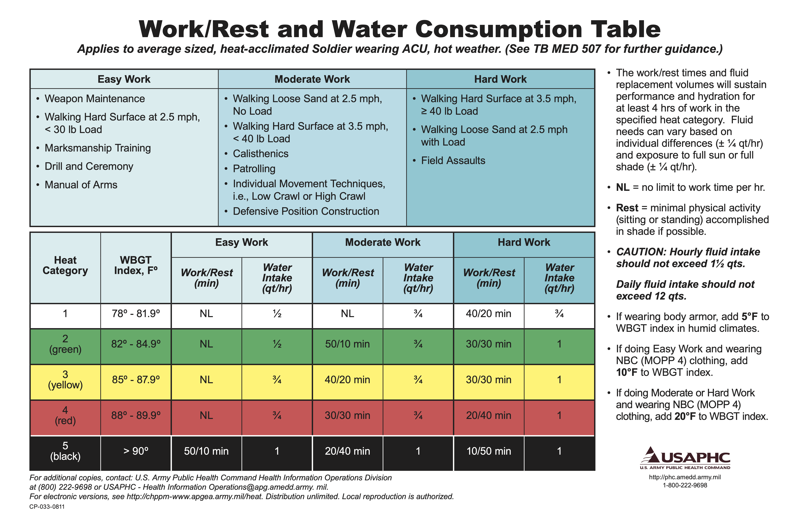
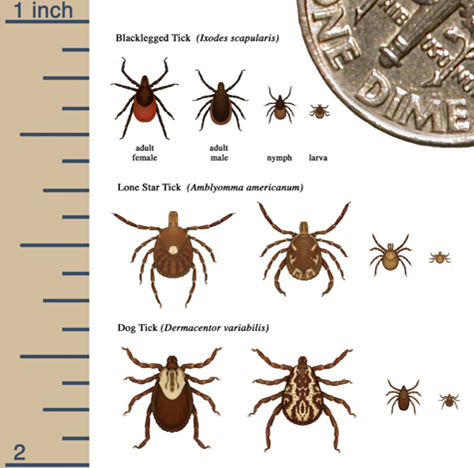

5 Personal Hygiene, Fieldcraft, and Medical
It is important to conduct personal hygiene activities while you are in the field. Depending on the conditions and facilities available, these activities may take a wide range of forms. For Week 1 of this course, while we are at Jay Cooke Group Camp, we will have access to pit toilets (non-flush) right near our campsite, as well as flush toilets/running water/shower facilities about 500ft from our campsite.
“Fieldcraft” is the collective term for the personal activities you practice while living, traveling, and making scientific observations in the field.
5.1 Personal Hygiene
Although you are in a field environment, you can still practice daily hygiene measures that will maintain your health and the health of others. At a minimum, you should practice the following activities.
5.1.1 Hand washing/hand sanitizing.
We will have a hand washing station available in camp and in the field. The hand washing station will be clearly marked and will have soap and water. We require everyone to wash their hands in the following circumstances:
After using the bathroom.
Prior to eating or handling food.
If for some reason the hand washing station is not available, we will have hand sanitizier available for use.
5.1.2 Pooping and peeing.
Everybody poops and pees, and you can poop and pee under any conditions! For those of use who are used to pooping and peeing in bathrooms with running water and flush toilets, it can be an adjustment to poop and pee under other conditions. But just remember our ancestors did that for thousands of years! We can too.
There are several different scenarios you may encounter when you need to poop and pee in this class:
There are pit toilets at the group camp site and flush toilets at the main campground, ~500ft walk away. You are welcome to use either of these facilities while we are in camp. NOTE: the pit toilets do not have running water, however they do have toilet paper. You will need to use hand sanitizer and wash your hands at our hand washing station in camp.
We will likely stop by a gas station 1-2 times per day (likely at the beginning and end of the day). You are welcome to use the facilities there.
We will have pop up tents that have sit down no-flush latrines at our field sites. These do not have running water, however they will be stocked with toilet paper. They will also have absorbant powder we will ask you to sprinkle on your waste when you are done. You will need to use hand sanitizer in this case, which will be provided.
If we are at our field sites, you are always welcome to “take a walk” to poop or pee. Make sure you go to an area where noone else will be walking, away from the main group. You can stand or squat and pee on the ground. If you need to poop, be sure to bring supplies (toilet paper, hand sanitizer, something to dig with - this is a soils course so we will have plenty!), and dig a small hole. Squat and release into the hole. Cover your waste and toilet paper with soil. Here are a few tips and resources from REI:

5.1.3 Menstruation.
If you are experiencing menstruation while in the field, there are several resources available to you:
Many of the instructors/TAs have significant field experience and can provide advice if you need to know where to start - we are here to help! There will be emergency tampons and pads available if anyone needs them.
Here is an excellent resource from REI on backpacking with your period
5.1.4 Brushing teeth.
You should brush your teeth 1-2 x daily. You can do this either in the main campground bathrooms (with running water), or right in camp using water from your water bottle. In this case, wet your toothbrush after you put toothpaste on it, then brush your teeth! NOTE: Please do this at least 20 steps away from anyones tent. You can spit on the ground and use more water from your water bottle to rinse your mouth! Continue your normal flossing routine while in camp. However, please dispose of your floss in a trash receptacle or even in a small ziploc bag that you maintain in your tent for small trash.
5.1.5 Washing/Showers
There are several levels of washing and showers available to you in a field environment. For Week 1 of this course, there will be two:
At a minimum, each day when you get back to your tent or before you go to bed you should take a “field shower” which consists of using baby wipes to clean your hotspots. Your hotspots are your crotch, butt, and armpits. Use separate baby wipes for each hotspot and place the baby wipes in a bag that you can throw in the main camp trash, so you do not have to keep the waste in your tent.
You are welcome to use the main campground showers. Unless medically necessary or in the case of an emergency, please ONLY take showers at night. You will be dirty right away again in the morning once we are in the field and a shower will take up a significant amount of your time in the morning.
5.2 Fieldcraft
Several daily practices will improve your fieldcraft and allow you to get the most out of instructional time as well as collect good scientific data.
5.2.1 Always think ahead for the weather.
We will be outside in ALL weather EXCEPT lightning and/or tornados. This means we may be out in the rain. You can get wet – you will dry off! It will be very important to ensure you stay warm. Bring layers in your pack, especially for windy/cold days and when we go up north (week 2), pack a winter hat!
5.2.2 Sleeping comfortably.
Some nights may be quite cold. Your sleeping bag will be a comfortable refuge. However, some sleeping bags may not provide comfort once the temperatures drop below 40F. In this case there are a number of actions you can take to ensure you are sleeping comfortably:
Put socks on! Your feet are often the things that will be coldest. Put your warmest pair of socks on or even double up if you need to!
Layer up! You can always wear layers in your sleeping bag. I’ve definitely slept in my bag with a coat and snowpants on before in extremely cold weather.
Bring a blanket into your bag! We had a blanket on the packing list exactly for this reason. A blanket in your bag can significantly increase your comfort level.
Put a winter hat on! You can always put your winter hat on. This helps to reduce heat loss from your noggin.
5.2.3 Clothing and footwear.
Wear PANTS! Leggings probably not a good choice most days.
Wear close-toed shoes or boots (bring rubber boots if you have them).
Your feet can get wet and you will be just fine for a day. Just allow your feet to dry out at night! Wear a different pair of socks for sleeping than you wore during the day.
If your rain gear is semi-waterproof/semi-breathable, consider a cheap poncho in case we have a super rainy day.
5.2.4 Drying your clothes.
We will not have access to a washer or dryer. If you have wet clothes, these can be dried overnight by:
Hanging paracord to string a line inside of your tent. You can hang clothes on this to dry them.
You can also bring clothes into the outer part of your sleeping bag or under you - your body heat will help dry them out.
5.2.5 Food and water.
Food. All food is provided - you are welcome to augment with your own snacks and purchase food at gas stations as necessary.
Water. Bring a couple of water bottles each day. Average requirement depends on temperature and person, we shouldn’t see anything more than 85 degree WBGT, and easy work so you can estimate a max of 4 liters per day.

5.2.6 Ticks.
Ticks are out and active. They tend to be most prevalent in dry to mesic sites, less prevalent/absent from wetlands. Ticks “quest”, and they grab on to your pant legs. They crawl up until they find a tight place – this is where they usually stop. They do not drop from trees.
Ticks can carry human pathogens, prevalence is low, but important (Staph/Lymes).
Deer ticks are much more likely to transmit than wood ticks.
Ticks need 24-36 hours after biting to transmit Lyme, so doing a good nightly tick check is important.
Deet and permethrin applied to key areas/clothing items can also mitigate risk.

5.2.7 Mosquitoes
More prevalent in wetter areas than drier areas. Mostly just an annoyance! Remember, you can and will survive mosquito bites! You are bigger than them! You may want to carry a headnet in your backpack for easy access. Headnets are best worm with baseball caps or full brim hats.
5.3 Medical
If you are experiencing ANY medical issues at all, please report them to the primary medic (Amital Shaver). Kari Wolf and Nic Jelinski (instructors) are the secondary medics and should also be made aware of any potential situations so that we can assist.
There will always be two first aid kits in the field with us at all times.
5.3.1 Over the counter mdeications.
The primary medic will have access to standard over the counter medications should you need them in an emergency:
Tylenol
Ibuprofen
Pepto Bismol
Dramamine
Sudafed
Benadryl